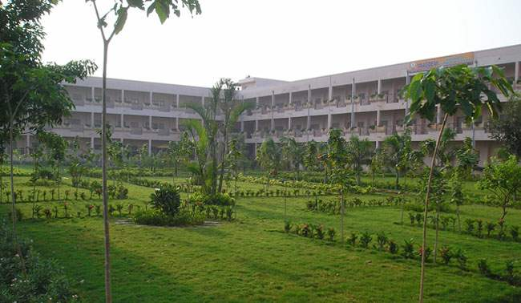
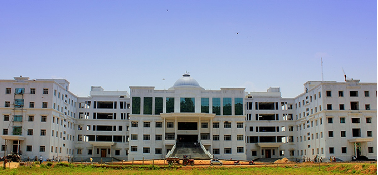

2. KANDULA SREENIVASA REDDY MEMORIAL COLLEGE OF ENGINEERING

KANDULA SREENIVASA REDDY MEMORIAL COLLEGE OF ENGINEERING is located in Kadapa district and affililated with JNTU Kakinada
KSRMCE ESTABLISHED:1995
KSRMCE ACCEREDIATION:NACC
KSRMCE AFFILIATED:JNTUA
KSRMCE ELIGIBILITY:Graduation 50%+YVUCET
KSRMCE FEE STRUCTURE:50K
KSRMCE COURSES:MBA
KSRMCE LOCATION: Tadigotla Village, Chintakommadinne Mandal, Pulivendula Road, KSRM Hostel Rd, Andhra Pradesh 516003
KSRMCE PLACEMENT: L&T, HCL, INFOSYS, WIPRO and TECH MAHINDRA
Read More3.VAAGDEVI INSTITUTE OF TECHNOLOGY AND SCEINCE
VAAGDEVI INSTITUTE OF TECHNOLOGY AND SCEINCE is located in Kadapa district and affililated with JNTU Kakinada
VITS ESTABLISHED:2002
VITS ACCEREDIATION:AICTE
VITS AFFILIATED:JNTUA
VITS ELIGIBILITY:Graduation 50%+YVUCET
VITS FEE STRUCTURE:70K
VITS COURSES: HRM, GM, MBA, FM, IT and MM
VITS LOCATION: Peddasettipalli, Proddatur, Andhra Pradesh 516360
VITS PLACEMENT: IBM, TCS, CTS, CAPGEMINI and INFOSYS.
Read More4. ANNAMACHARYA INSTITUTE OF TECHNOLOGY AND SCIENCES
ANNAMACHARYA INSTITUTE OF TECHNOLOGY AND SCIENCES is located in Kadapa district and affililated with JNTU Kakinada
AITS ESTABLISHED:1997
AITS ACCEREDIATION:NACC
AITS AFFILIATED:JNTUA
AITS ELIGIBILITY:Graduation 50%+YVUCET
AITS FEE STRUCTURE:1Lakh
AITS COURSES: Business & Management Studies, MBA in HR (Human Resource), MBA in Finance, MBA in IT & Systems, NGO Management, MBA in Sales & Marketing, Agriculture & Food Business, MBA in Operations, MBA in finance, Supply Chain, Digital Marketing
AITS LOCATION: Utukur (Post), Chintakomma Dinne (V&M), Kadapa, YSR (Distt.) Andhra Pradesh – 516 003.
AITS PLACEMENT:: EUREKA FORBES, HINDUJA GLOBAL SERVICES
Read More